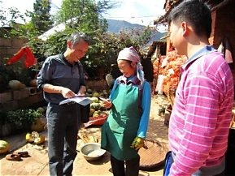
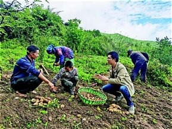
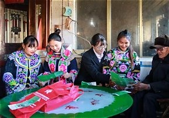

记
雾还没散，山坳里的青石板路醒得很早。
雾还没散，山坳里的青石板路醒得很早。
阿婆坐在门槛上，把绣绷擦了又擦，针线却许久没有动过。
年轻人走了，手艺也像这晨雾，一年比一年淡。
……
……
把心沉下来，顺着纹样，一针一针地走。
那时候，村口只有一条泥路。绣品背到镇上，来回要走大半天。
新路通了，订单来了。绣娘们坐在家里，也能把日子绣得亮亮堂堂。
在乡村振兴的背后，
有千千万万名村干部，
把青春与汗水，
献给了这片土地。
有些名字没有刻在碑上，
却亮在每一盏灯里。
他把铺盖搬进村委会的旧屋，白天跑项目，夜里学方言。谁家有几亩地、几口人，他都记在本子上。

山高路远，他带着乡亲们一寸一寸地凿。七年，八公里，一条天路终于出了山。

她学着直播带货，把山货卖到了山外；也把走出去的年轻人，一个一个喊回了家。

暴雨那夜，他挨家挨户敲门，把老人一个一个背到安全的地方。天亮了，他才想起自己一夜没合眼。
这是阿妹的乡村振兴故事，
是每一位村干部的乡村振兴故事，
也是全体人民的乡村振兴故事。
山河有信 · 岁月留灯你刚刚帮阿妹完成的，是她们真实走过的路。
H5 里阿妹的故事是虚构的，但它的原型，藏在湘西十八洞村的苗绣工坊里。
这里曾是交通闭塞的苗寨，苗绣被誉为苗族的“无字史书”，却一度因没有销路而几近失传。
直到村里的带头人把自家瓦房改成工房，自掏腰包给绣娘发补贴，带着留守妇女从零开始接单。从第一年订单超十万元，到辐射带动五百余名妇女就业，再到绣品走进十几个国家和地区——阿妹指尖的那根针，绣的正是她们真实的人生。
阿妹是虚构的，但十八洞村苗绣的“出山”，是真的。
这便是中国乡村振兴的一张缩影。
山乡的灯已经亮起，往后的日子，愿被一针一线绣成想要的模样。
指尖上的振兴